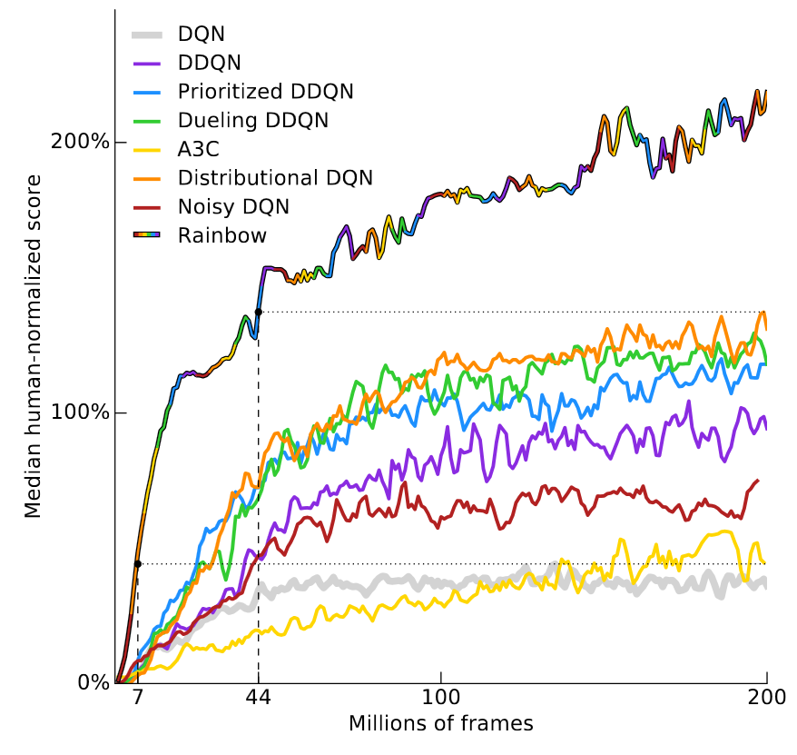
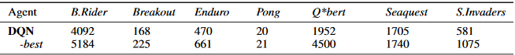
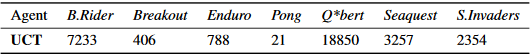
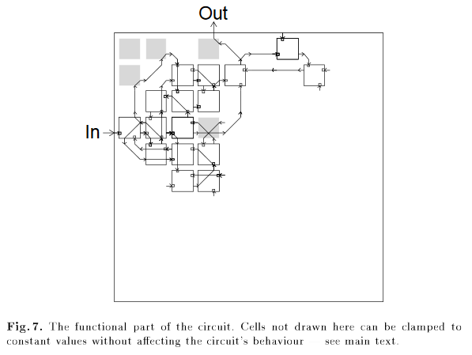
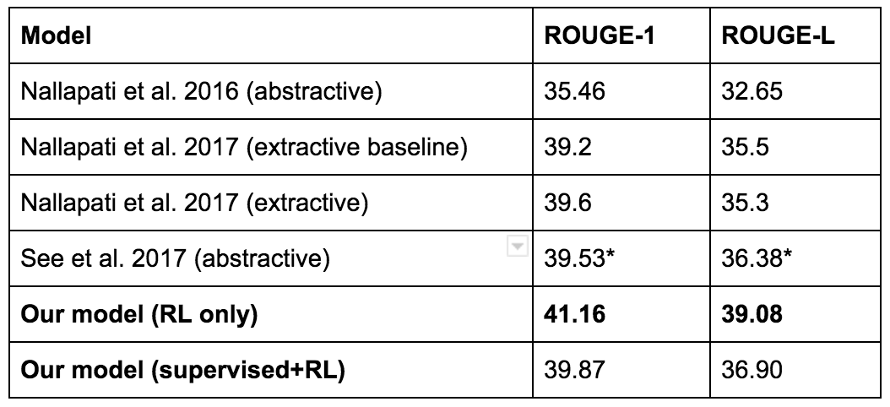
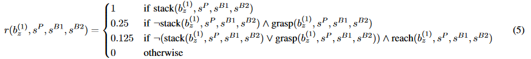
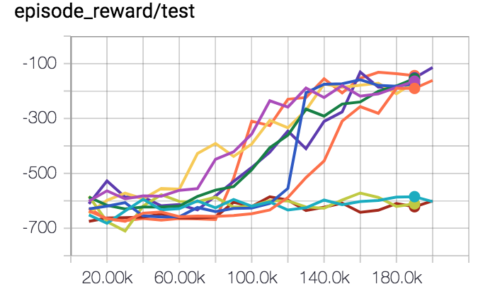
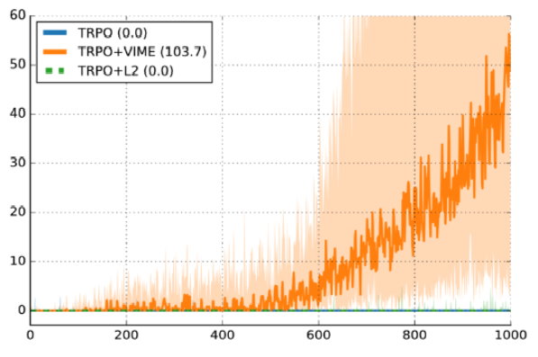
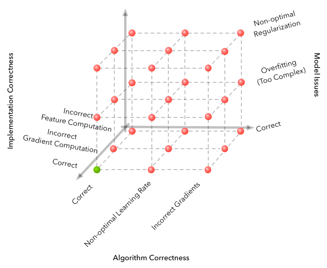

2018년 6월 24일 참고: 본 포스트의 예시를 인용하려면 해당 예시가 출처인 논문을 인용해 주십시오. 포스트 전체를 인용하려면 다음 BibTeX을 사용할 수 있습니다.
@misc{rlblogpost,
title={Deep Reinforcement Learning Doesn't Work Yet},
author={Irpan, Alex},
howpublished={\url{https://www.alexirpan.com/2018/02/14/rl-hard.html}},
year={2018}
}
본 글에서는 주로 지난 몇 년간 버클리(Berkeley), 구글 브레인(Google Brain), 딥마인드(DeepMind), 오픈AI(OpenAI)에서 발표된 논문들을 인용하는데, 이는 필자가 가장 쉽게 접할 수 있는 연구들이기 때문이다. 이전의 문헌이나 다른 기관의 연구를 누락했을 가능성이 거의 확실하며, 이에 대해 사과드린다. 결국 필자도 한 명의 개인일 뿐이다.
언젠가 페이스북에서 다음과 같은 주장을 한 적이 있다.
누군가 나에게 강화학습(reinforcement learning)으로 자신의 문제를 해결할 수 있는지 물어볼 때마다, 나는 해결할 수 없다고 답한다. 적어도 70%의 경우에는 이 말이 맞다고 생각한다.

심층 강화학습(Deep reinforcement learning)은 엄청난 대중적 기대(hype)에 둘러싸여 있다. 그리고 그럴 만한 충분한 이유가 있다! 강화학습은 믿을 수 없을 정도로 일반적인 패러다임이며, 원론적으로 강력하고 성능이 뛰어난 RL 시스템은 모든 분야에서 훌륭한 성과를 내야 한다. 이 패러다임을 심층학습(deep learning)의 실증적인 힘과 결합하는 것은 명백히 잘 들어맞는 조합이다. 심층 RL은 인공일반지능(AGI)과 가장 유사해 보이는 분야 중 하나이며, 이는 수십억 달러의 자금 조달을 이끄는 일종의 꿈이다.
불행히도, 그것은 아직 제대로 작동하지 않는다.
물론 필자는 그것이 작동할 수 있다고 믿는다. 강화학습을 믿지 않았다면 이 분야에서 일하고 있지 않았을 것이다. 하지만 그 과정에는 많은 문제가 가로막고 있으며, 그 중 다수는 근본적으로 어렵게 느껴진다. 학습된 에이전트의 아름다운 데모 영상들은 그것을 만들기 위해 들어간 모든 피, 땀, 눈물을 감추고 있다.
지금까지 필자는 최근 연구들에 매료된 사람들을 여러 번 보았다. 그들은 심층 강화학습을 처음 시도해 보고, 예외 없이 심층 RL의 난이도를 과소평가한다. 예외 없이 "장난감 문제(toy problem)"는 보기만큼 쉽지 않다. 그리고 예외 없이, 현실적인 연구 기대치를 설정하는 법을 배울 때까지 이 분야의 쓴맛을 몇 번이고 보게 된다.
이것은 특정 개인의 잘못이 아니다. 이는 시스템적인 문제에 가깝다. 긍정적인 결과에 대해서는 이야기를 작성하기 쉽다. 부정적인 결과에 대해 그렇게 하기는 어렵다. 문제는 연구자들이 가장 자주 마주치는 것이 바로 부정적인 결과라는 점이다. 어떤 면에서는 부정적인 사례가 긍정적인 사례보다 실제로 더 중요하다.
본 포스트의 나머지 부분에서는 심층 RL이 작동하지 않는 이유, 작동하는 사례, 그리고 향후 더 안정적으로 작동할 수 있는 방안에 대해 설명한다. 필자가 이 글을 쓰는 이유는 사람들이 심층 RL 연구를 중단하기를 원해서가 아니다. 문제가 무엇인지에 대한 합의가 이루어지면 문제 해결을 향한 진전을 이루기 더 쉽고, 사람들이 동일한 문제를 독립적으로 계속해서 재발견하는 대신 실제로 그 문제에 대해 이야기할 때 합의를 구축하기가 더 쉽다고 믿기 때문이다.
필자는 더 많은 심층 RL 연구를 보고 싶다. 새로운 사람들이 이 분야에 진입하기를 바란다. 또한 새로운 사람들이 자신이 어떤 분야에 발을 들이고 있는지 알기를 바란다.
본 포스트의 나머지 부분을 다루기 전에 몇 가지 언급할 점이 있다.
-
본 포스트에서 여러 논문을 인용한다. 대개 필자는 설득력 있는 부정적 예시를 위해 논문을 인용하며, 긍정적인 예시는 생략한다. 이것이 필자가 해당 논문을 좋아하지 않는다는 것을 의미하지는 않는다. 필자는 이 논문들을 좋아하며, 시간이 된다면 읽어볼 만한 가치가 있다.
-
필자의 일상에서 "RL"은 항상 암묵적으로 심층 RL을 의미하기 때문에, 본 글에서는 "강화학습"과 "심층 강화학습"을 혼용하여 사용한다. 필자는 강화학습 일반이 아니라 심층 강화학습의 실증적 거동을 비판하고 있는 것이다. 필자가 인용하는 논문들은 대개 에이전트를 심층 신경망으로 표현한다. 실증적 비판이 선형 RL이나 테이블형(tabular) RL에도 적용될 수는 있지만, 그것이 더 작은 규모의 문제로 일반화될 수 있는지에 대해서는 확신이 없다. 심층 RL을 둘러싼 기대는 좋은 함수 근사(function approximation)가 필수적인 대규모의 복잡한 고차원 환경에 RL을 적용할 수 있다는 가능성에 의해 주도된다. 특히 다루어야 할 것은 바로 그러한 기대이다.
-
본 포스트는 비관적인 내용에서 낙관적인 내용으로 진행되도록 구성되어 있다. 다소 길다는 점은 알고 있으나, 답변을 하기 전에 시간을 내어 포스트 전체를 읽어 주시면 감사하겠다.
더 지체하지 않고, 심층 RL의 몇 가지 실패 사례를 소개한다.
심층 강화학습은 표본 효율성(Sample Efficiency)이 끔찍하게 낮을 수 있다
심층 강화학습(Deep Reinforcement Learning)에서 가장 잘 알려진 벤치마크는 아타리(Atari)이다. 이제는 유명해진 Deep Q-Networks 논문에서 보여주었듯이, Q-러닝(Q-Learning)을 적절한 크기의 신경망 및 몇 가지 최적화 기법과 결합하면 여러 아타리 게임에서 인간 또는 인간을 뛰어넘는 성능을 달성할 수 있다.
아타리 게임은 초당 60프레임으로 실행된다. 머릿속으로 바로 떠올려 보았을 때, 최첨단(State of the art) DQN이 인간 수준의 성능에 도달하기 위해 얼마나 많은 프레임이 필요할지 가늠할 수 있겠는가?
답은 게임마다 다르므로, 최근 Deepmind의 논문인 Rainbow DQN (Hessel et al, 2017)을 살펴보자. 이 논문은 기존 DQN 구조에 점진적으로 이루어진 여러 발전 사항들에 대해 절제 연구(Ablation Study)를 수행하여, 모든 발전 사항을 결합했을 때 가장 좋은 성능을 낸다는 것을 보여준다. 이는 시도된 57개의 아타리 게임 중 40개 이상에서 인간 수준의 성능을 초과한다. 결과는 이 유용한 차트에 표시되어 있다.

y축은 "인간 기준 정규화 점수의 중앙값(Median human-normalized score)"이다. 이는 각 아타리 게임마다 하나씩 총 57개의 DQN을 학습시키고, 인간의 성능이 100%가 되도록 각 에이전트의 점수를 정규화한 다음, 57개 게임 전체에 걸친 중앙값 성능을 플롯하여 계산된다. RainbowDQN은 약 1,800만 프레임에서 100% 임계값을 통과한다. 이는 약 83시간의 플레이 경험에 모델을 학습시키는 데 걸리는 시간을 더한 것에 해당한다. 대부분의 인간이 몇 분 안에 익히는 아타리 게임치고는 매우 긴 시간이다.
하지만 이전 기록(Distributional DQN (Bellemare et al, 2017))이 100% 중앙값 성능에 도달하기 위해 약 4배 더 많은 시간인 7,000만 프레임이 필요했다는 점을 고려하면, 1,800만 프레임은 실제로는 꽤 훌륭한 수치이다. Nature DQN (Mnih et al, 2015)의 경우, 2억 프레임의 경험을 거친 후에도 100% 중앙값 성능에 도달하지 못한다.
계획 오류(Planning Fallacy)에 따르면 어떤 일을 끝내는 데는 보통 생각했던 것보다 더 오랜 시간이 걸린다. 강화학습에도 자체적인 계획 오류가 존재한다. 즉, 정책(Policy)을 학습하는 데는 보통 생각했던 것보다 더 많은 샘플이 필요하다.
이것은 아타리에만 국한된 문제가 아니다. 두 번째로 인기 있는 벤치마크는 MuJoCo 물리 시뮬레이터에서 설정된 작업 세트인 MuJoCo 벤치마크이다. 이러한 작업에서 입력 상태는 대개 시뮬레이션된 로봇의 각 관절의 위치와 속도이다. 시각 정보를 해결할 필요가 없음에도 불구하고, 이 벤치마크들은 작업에 따라 학습하는 데 \(10^5\)에서 \(10^7\) 단계가 걸린다. 이처럼 단순한 환경을 제어하기 위해 이토록 엄청나게 많은 양의 경험이 필요하다는 것은 놀라운 일이다.
아래에 데모로 표시된 DeepMind 파쿠르 논문 (Heess et al, 2017)은 64개의 워커(Worker)를 사용하여 100시간 이상 정책을 학습시켰다. 논문에서는 "워커"가 무엇을 의미하는지 명확히 밝히지 않았지만, 1개의 CPU를 의미하는 것으로 추정된다.
이 결과들은 정말 멋지다. 처음 나왔을 때, 심층 RL이 이러한 달리기 보행을 학습할 수 있다는 것 자체에 놀랐다.
동시에, 이것이 6400 CPU 시간을 필요로 했다는 사실은 다소 낙담스럽다. 더 적은 시간이 걸릴 것이라 기대해서가 아니라... 심층 RL이 실용적인 수준의 샘플 효율성(Sample Efficiency)보다 여전히 몇 자릿수나 위에 있다는 점이 실망스럽기 때문이다.
여기에는 명백한 반론이 존재한다. 샘플 효율성을 그냥 무시하면 어떨까? 경험을 생성하기 쉬운 환경들이 몇 가지 존재한다. 게임이 대표적인 예시이다. 하지만 이것이 가능하지 않은 모든 환경에서 RL은 힘겨운 싸움에 직면하게 되며, 불행히도 대부분의 현실 세계 환경이 이 범주에 속한다.
최종 성능만을 중요하게 생각한다면, 많은 문제들은 다른 방법으로 더 잘 해결된다
어떤 연구 문제에 대한 해결책을 찾을 때, 대개 서로 다른 목표들 사이에 절충(Trade-off)이 존재한다. 해당 연구 문제에 대한 정말 좋은 해결책을 얻는 방향으로 최적화할 수도 있고, 좋은 연구 기여를 하는 방향으로 최적화할 수도 있다. 가장 좋은 문제는 좋은 해결책을 얻기 위해 좋은 연구 기여가 필요한 문제이지만, 그러한 기준을 충족하면서 접근하기 쉬운 문제를 찾기는 어려울 수 있다.
순수하게 좋은 성능을 얻는 관점에서 볼 때, 심층 RL의 실적은 그리 좋지 못하다. 다른 방법들에 의해 지속적으로 패배하기 때문이다. 여기 온라인 궤적 최적화(Online Trajectory Optimization)로 제어되는 MuJoCo 로봇의 영상이 있다. 올바른 행동들이 오프라인 학습 없이 온라인에서 실시간에 가깝게 계산된다. 아, 그리고 이것은 2012년 하드웨어에서 실행되고 있다. (Tassa et al, IROS 2012).
이러한 행동들은 파쿠르 논문과 비교해도 손색이 없다고 생각한다. 이 논문과 그 논문의 차이점은 무엇일까?
차이점은 Tassa 등은 모델 예측 제어(Model Predictive Control, MPC)를 사용한다는 점인데, 이는 참값 세계 모델(Ground-truth World Model, 즉 물리 시뮬레이터)에 대해 계획(Planning)을 수행할 수 있다. 모델 프리(Model-free) RL은 이러한 계획을 수행하지 않으므로 훨씬 더 어려운 작업을 수행해야 한다. 반면에, 모델에 대한 계획이 이만큼 도움이 된다면, 굳이 번거롭게 RL 정책을 학습시키는 수고를 할 필요가 있을까?
비슷한 맥락에서, 기성 몬테카를로 트리 탐색(Monte Carlo Tree Search, MCTS)을 사용하면 아타리에서 DQN을 쉽게 능가할 수 있다. 다음은 Guo et al, NIPS 2014의 베이스라인 수치이다. 이들은 학습된 DQN의 점수와 UCT 에이전트(UCT는 오늘날 사용되는 MCTS의 표준 버전임)의 점수를 비교한다.


다시 말하지만, 이는 공정한 비교가 아니다. DQN은 탐색을 수행하지 않고, MCTS는 참값 모델(아타리 에뮬레이터)에 대해 탐색을 수행하기 때문이다. 하지만 때로는 공정한 비교 따위는 신경 쓰지 않을 때도 있다. 때로는 그저 그것이 작동하기만을 원할 뿐이다. (UCT에 대한 전체 평가에 관심이 있다면, 원래의 Arcade Learning Environment 논문 (Bellemare et al, JAIR 2013)의 부록을 참조하라.)
강화학습(Reinforcement learning)은 이론적으로 세계 모델(model of the world)을 알 수 없는 환경을 포함하여 무엇이든 해결할 수 있다. 그러나 이러한 일반성(generality)에는 대가가 따른다. 학습에 도움이 될 수 있는 문제 특정적(problem-specific) 정보를 활용하기 어렵기 때문에, 하드코딩할 수 있었던 것들을 학습하기 위해 엄청난 양의 샘플을 사용해야만 한다.
경험 법칙상 드문 경우를 제외하고는 도메인 특정적(domain-specific) 알고리즘이 강화학습보다 더 빠르고 성능이 좋다. 심층 강화학습(deep RL) 자체를 목적으로 심층 강화학습을 연구하는 것이라면 이는 문제가 되지 않겠지만, 개인적으로 강화학습의 성능을 다른 연구 분야와 비교할 때 좌절감을 느끼곤 한다. 내가 알파고(AlphaGo)를 매우 좋아했던 이유 중 하나는 그것이 심층 강화학습의 명백한 승리였기 때문이며, 그러한 일은 그리 자주 일어나지 않는다.
이로 인해 비전문가들에게 내가 다루는 문제가 왜 멋지고, 어렵고, 흥미로운지 설명하기가 더 어려워진다. 왜냐하면 그들은 종종 그 문제들이 왜 어려운지 이해할 수 있는 배경지식이나 경험이 없기 때문이다. 사람들이 생각하는 심층 강화학습의 가능성과 실제 심층 강화학습이 할 수 있는 것 사이에는 설명의 격차가 존재한다. 나는 현재 로봇 공학 분야에서 일하고 있다. 로봇 공학을 언급할 때 대부분의 사람들이 떠올리는 회사인 보스턴 다이내믹스(Boston Dynamics)를 생각해 보자.
이것은 강화학습을 사용하지 않는다. 사람들이 이것이 강화학습을 사용한다고 생각하는 대화를 몇 번 나눈 적이 있지만, 그렇지 않다. 해당 그룹의 연구 논문들을 찾아보면 시변 LQR(time-varying LQR), QP 솔버(QP solvers), 볼록 최적화(convex optimization)를 언급하는 논문들을 발견할 수 있다. 즉, 그들은 주로 고전적인 로봇 공학 기법을 적용한다. 이러한 고전적 기법들을 올바르게 적용하면 꽤 잘 작동할 수 있음이 밝혀졌다.
강화학습은 대개 보상 함수를 필요로 한다
강화학습은 보상 함수(reward function)의 존재를 가정한다. 보통 이는 주어지거나, 오프라인에서 수동으로 튜닝되어 학습 과정 동안 고정된 상태로 유지된다. 모방 학습(imitation learning)이나 역강화학습(inverse RL)과 같은 예외가 있기 때문에 "보통"이라고 말했지만, 대부분의 강화학습 접근법은 보상을 오라클(oracle)로 취급한다.
중요한 점은, 강화학습이 올바르게 작동하려면 보상 함수가 당신이 원하는 바를 정확히 포착해야 한다는 것이다. 정말로 정확히 말이다. 강화학습은 보상 함수에 과적합(overfit)되는 성가신 경향이 있어 예상치 못한 결과를 초래하곤 한다. 이것이 바로 아타리(Atari)가 훌륭한 벤치마크인 이유이다. 많은 샘플을 얻기 쉬울 뿐만 아니라, 모든 게임의 목표가 점수를 극대화하는 것이므로 보상을 정의하는 것에 대해 걱정할 필요가 없으며, 다른 모든 이들도 동일한 보상 함수를 가지고 있음을 알 수 있기 때문이다.
이것이 MuJoCo 태스크들이 인기 있는 이유이기도 하다. 시뮬레이션에서 실행되기 때문에 모든 객체의 상태를 완벽하게 알 수 있으며, 이는 보상 함수 설계를 훨씬 더 쉽게 만들어 준다.
Reacher 태스크에서는 중심점에 연결된 두 세그먼트의 로봇 팔을 제어하며, 목표는 팔의 끝을 목표 위치로 이동시키는 것이다. 아래는 성공적으로 학습된 정책(policy)의 비디오이다.
모든 위치를 알고 있기 때문에, 보상은 팔 끝에서 목표물까지의 거리와 작은 제어 비용(control cost)의 합으로 정의될 수 있다. 원칙적으로는 환경에 대해 충분히 정확한 위치를 얻을 수 있는 센서가 충분하다면 실제 세계에서도 이를 수행할 수 있다. 그러나 시스템이 무엇을 하기를 원하는지에 따라 합리적인 보상을 정의하는 것이 어려울 수 있다.
보상 함수를 요구하는 것 자체는 그리 큰 문제가 되지 않을 수 있지만, 다음 문제가 존재한다...
보상 함수 설계는 어렵다
어떤 보상 함수를 만드는 것 자체는 그리 어렵지 않다. 어려움은 원하는 행동을 장려하면서도 여전히 학습 가능한 보상 함수를 설계하려고 할 때 발생한다.
HalfCheetah 환경에는 수직 평면으로 제한된 두 다리 로봇이 있으며, 이는 로봇이 앞뒤로만 달릴 수 있음을 의미한다.
목표는 달리는 걸음걸이(gait)를 학습하는 것이다. 보상은 HalfCheetah의 속도이다.
이것은 형성된(shaped) 보상으로, 최종 목표에 더 가까운 상태일수록 더 많은 보상을 제공함을 의미한다. 이는 목표 상태에서만 보상을 제공하고 다른 곳에서는 보상을 제공하지 않는 희소한(sparse) 보상과 대조된다. 형성된 보상은 정책이 문제에 대한 완전한 해결책을 찾아내지 못했을 때도 긍정적인 피드백을 제공하기 때문에 종종 학습하기가 훨씬 쉽다.
불행히도 형성된 보상은 학습에 편향(bias)을 줄 수 있다. 앞서 언급했듯이, 이는 원하는 것과 일치하지 않는 행동으로 이어질 수 있다. 좋은 예로 OpenAI 블로그 포스트에 소개된 보트 레이싱 게임이 있다. 의도된 목표는 레이스를 완주하는 것이다. 희소한 보상이라면 주어진 시간 내에 완주했을 때 +1의 보상을 주고, 그렇지 않으면 0의 보상을 주는 방식을 상상할 수 있을 것이다.
제공된 보상은 체크포인트를 통과할 때 점수를 주며, 레이스를 더 빨리 마칠 수 있게 해주는 파워업 아이템을 획득할 때도 보상을 준다. 알고 보니 레이스를 완주하는 것보다 파워업 아이템만 계속해서 챙기는 것이 더 많은 점수를 얻는 것으로 나타났다.
솔직히 말해서, 이 블로그 포스트가 처음 나왔을 때 나는 약간 짜증이 났다. 그것은 이 포스트가 잘못된 지적을 하고 있다고 생각해서가 아니었다! 그 지적이 너무나도 당연하고 뻔한 사실이라고 생각했기 때문이다. 보상이 잘못 지정되었을 때 강화학습(Reinforcement Learning, RL)이 이상한 행동을 하는 것은 당연하다! 이 포스트가 주어진 예시를 가지고 불필요하게 호들갑을 떨고 있다는 느낌을 받았다.
그러다 이 블로그 포스트를 쓰기 시작하면서, 잘못 지정된 보상을 보여주는 가장 설득력 있는 영상이 바로 그 보트 레이싱 영상이라는 점을 깨달았다. 그리고 그 이후로 그 영상은 이 문제에 대한 경각심을 일깨우는 여러 발표 자료에서 사용되어 왔다. 그러니, 이 포스트가 훌륭한 블로그 포스트였음을 마지못해 인정하겠다.
RL 알고리즘은 자신이 처한 환경에 대해 얼마나 많은 지식을 가정할 수 있는지에 따라 연속 스펙트럼 상에 존재한다. 가장 광범위한 범주인 모델 프리(Model-free) RL은 블랙박스 최적화(Black-box optimization)와 거의 동일하다. 이러한 방법들은 오직 자신이 MDP(Markov Decision Process) 환경에 있다고만 가정할 수 있다. 그 외에는 아무것도 주어지지 않는다. 에이전트는 단순히 이것이 +1 보상을 주고, 저것은 주지 않는다는 것만 전달받으며, 나머지는 스스로 학습해야 한다. 그리고 블랙박스 최적화와 마찬가지로, 문제는 +1 보상이 올바른 이유로 주어지는 것이 아닐지라도 +1 보상을 주는 것이라면 무엇이든 좋은 것으로 취급된다는 점이다.
RL이 아닌 고전적인 예시로, 누군가 유전 알고리즘(Genetic Algorithm)을 회로 설계에 적용했다가 연결되지 않은 논리 게이트가 최종 설계에 필수적인 회로를 얻게 된 적이 있다.

회색 셀들은 올바른 동작을 얻기 위해 필수적이며, 왼쪽 상단 모서리에 있는 셀은 아무것도 연결되어 있지 않음에도 불구하고 필요하다. “An Evolved Circuit, Intrinsic in Silicon, Entwined with Physics”로부터 발췌
더 최근의 예시로는 이 2017년 Salesforce 블로그 포스트를 참고하라. 그들의 목표는 텍스트 요약이다. 그들의 베이스라인 모델은 지도 학습(Supervised Learning)으로 학습된 후, ROUGE라는 자동화된 지표로 평가된다. ROUGE는 미분 불가능하지만, RL은 미분 불가능한 보상도 다룰 수 있으므로, 그들은 ROUGE를 직접 최적화하기 위해 RL을 적용해 보았다. 이는 높은 ROUGE 점수를 얻었지만(만세!), 실제로는 좋은 요약본을 만들어내지 못했다. 다음은 그 예시이다.
Button was denied his 100th race for McLaren after an ERS prevented him from making it to the start-line. It capped a miserable weekend for the Briton. Button has out-qualified. Finished ahead of Nico Rosberg at Bahrain. Lewis Hamilton has. In 11 races. . The race. To lead 2,000 laps. . In. . . And.
이처럼 RL 모델이 가장 높은 ROUGE 점수를 기록했음에도 불구하고…

그들은 결국 대신 다른 모델을 사용하게 되었다.
여기에 또 다른 재미있는 예가 있다. 가끔 “레고 쌓기 논문”으로 알려진 Popov et al, 2017이다. 저자들은 분산 버전의 DDPG를 사용하여 물체 움켜쥐기(Grasping) 정책을 학습한다. 목표는 빨간색 블록을 잡아서 파란색 블록 위에 쌓는 것이다.
그들은 이를 작동시키는 데 성공했지만, 흥미로운 실패 사례를 마주했다. 초기 들어 올리기 동작의 경우, 빨간색 블록이 얼마나 높이 올라갔는지에 따라 보상이 주어진다. 이는 블록 밑면의 z-좌표로 정의된다. 실패 모드 중 하나는 정책이 빨간색 블록을 집어 올리는 대신 뒤집어 버리는 법을 학습했다는 점이다.
물론 이것은 의도한 해결책이 아니다. 하지만 RL은 신경 쓰지 않는다. 강화학습의 관점에서는 블록을 뒤집어서 보상을 받았으므로, 앞으로도 계속 블록을 뒤집을 뿐이다.
이를 해결하는 한 가지 방법은 로봇이 블록을 쌓은 후에만 양의 보상을 주는 방식으로 보상을 희소하게(Sparse) 만드는 것이다. 때로는 희소한 보상도 학습이 가능하기 때문에 이 방법이 작동하기도 한다. 하지만 양의 강화가 부족하여 모든 것이 너무 어려워지기 때문에 작동하지 않는 경우가 많다.
이를 해결하는 다른 방법은 세심한 보상 형성(Reward Shaping)을 수행하여, 학습하고자 하는 행동이 RL 알고리즘에서 자연스럽게 도출될 때까지 새로운 보상 항을 추가하고 기존 항들의 계수를 미세 조정하는 것이다. 이 전선에서 RL과 싸우는 것은 가능하지만, 매우 허탈한 싸움이다. 가끔은 필요할 때도 있지만, 나는 이 작업을 하면서 무언가를 배웠다고 느껴본 적이 한 번도 없다.
참고로, 다음은 레고 쌓기 논문에 사용된 보상 함수 중 하나이다.

이 보상을 설계하는 데 얼마나 많은 시간이 소요되었는지는 알 수 없으나, 항의 개수와 다양한 계수들의 개수로 미루어 보아 "매우 많이" 걸렸을 것이라 짐작한다.
다른 RL 연구자들과 대화를 나누면서, 부적절하게 정의된 보상으로 인해 발생한 기이한 행동들에 대한 여러 일화들을 들은 적이 있다.
-
한 동료가 에이전트에게 방을 탐색하도록 학습시키고 있었다. 에이전트가 경계 밖으로 걸어나가면 에피소드가 종료된다. 그는 에피소드가 이런 식으로 종료될 때 아무런 패널티도 추가하지 않았다. 최종 학습된 정책은 자살을 선택하는 방향으로 수렴했는데, 그 이유는 음의 보상이 너무 많았고, 양의 보상을 얻기는 너무 어려웠으며, 음의 보상을 감수하며 오래 살아남는 것보다 0의 보상으로 빠르게 죽는 편이 더 나았기 때문이다.
-
한 친구는 시뮬레이션된 로봇 팔이 테이블 위의 한 점에 도달하도록 학습시키고 있었다. 알고 보니 그 점은 테이블을 기준으로 정의되어 있었고, 테이블은 어디에도 고정되어 있지 않았다. 정책은 테이블을 아주 세게 내리쳐서 테이블을 넘어뜨리는 법을 학습했고, 이로 인해 목표 점수도 함께 이동했다. 목표 점수가 마침 아주 우연히도 로봇 팔 끝부분 옆으로 떨어진 것이다.
-
한 연구자가 RL을 사용하여 시뮬레이션된 로봇 손이 망치를 집어 들고 못을 박도록 학습시키는 것에 대해 발표했다. 처음에는 못이 구멍에 얼마나 깊이 박혔는지에 따라 보상이 정의되었다. 로봇은 망치를 집어 드는 대신 자신의 사지를 사용하여 못을 쳐서 박았다. 그래서 그들은 망치를 집어 들도록 유도하는 보상 항을 추가하고 정책을 다시 학습시켰다. 그들은 정책이 망치를 집어 들도록 만드는 데는 성공했지만… 로봇은 망치를 실제로 사용하는 대신 못을 향해 던져버렸다.
인정하자면, 이것들은 모두 간접적으로 전해 들은 이야기들이며, 필자가 이러한 행동들을 담은 영상을 직접 본 것은 아니다. 하지만 그 중 어느 것도 터무니없게 들리지 않는다. 필자는 RL에 너무 많이 데여서 그렇지 않다고 믿을 수가 없다.
클립 극대화기(paperclip optimizers)에 대해 이야기하기를 좋아하는 사람들을 알고 있다. 이해한다, 정말로 이해한다. 하지만 솔직히 필자는 그런 이야기를 듣는 것에 지쳤는데, 왜냐하면 그 이야기들은 항상 그럴듯한 이야기를 만들어내기 위해 초지능적이고 정렬되지 않은 AGI를 가정하기 때문이다. 현재의 예시들이 항상 일어나고 있는 상황에서 그렇게 멀리까지 가정할 필요는 없다.
좋은 보상이 주어지더라도, 국소 최적해(Local Optima)에서 벗어나기는 어려울 수 있다
이전의 RL 예시들은 때때로 "보상 해킹(reward hacking)"이라고 불린다. 필자에게 이는 보상 함수 설계자가 의도한 답보다 더 많은 보상을 얻어내는 영리하고 기발한 해결책을 의미하는 것처럼 들린다.
보상 해킹은 예외적인 경우이다. 훨씬 더 흔한 경우는 탐색과 이용의 균형(exploration-exploitation trade-off)을 잘못 맞추어 발생하는 형편없는 국소 최적해(local optima)이다.
필자가 가장 좋아하는 영상 중 하나가 여기 있다. 이는 HalfCheetah 환경에서 학습하는 정규화된 어드밴티지 함수(Normalized Advantage Function)의 구현체이다.
외부인의 관점에서 보면 이것은 정말, 진짜로 바보 같다. 하지만 우리가 그것을 바보 같다고 말할 수 있는 이유는 3인칭 시점에서 볼 수 있고, 발로 달리는 것이 더 낫다는 사전 지식을 많이 가지고 있기 때문이다. RL은 이것을 모른다! 그것은 상태 벡터를 보고, 행동 벡터를 보내며, 약간의 양의 보상을 받고 있다는 것만 알 뿐이다. 그게 전부다.
학습 과정에서 무슨 일이 일어났는지에 대한 필자의 최선의 추측은 다음과 같다.
- 무작위 탐색에서 정책은 가만히 서 있는 것보다 앞으로 넘어지는 것이 더 낫다는 것을 발견했다.
- 그 행동을 충분히 반복하여 "고착화(burn in)"시켰고, 이제는 일관되게 앞으로 넘어지고 있다.
- 앞으로 넘어진 후, 정책은 일회성으로 강한 힘을 가하면 백플립을 하게 되어 약간의 보상을 더 얻을 수 있다는 것을 배웠다.
- 그것이 좋은 아이디어라고 확신할 수 있을 만큼 백플립을 충분히 탐색했고, 이제 백플립이 정책에 고착화되었다.
- 정책이 일관되게 백플립을 하게 된 시점에서, 정책에게 어느 쪽이 더 쉬울까? 몸을 바로 세우고 "일반적인 방식"으로 달리는 법을 배우는 것일까, 아니면 등을 대고 누운 채로 앞으로 나아가는 방법을 알아내는 것일까? 필자는 후자일 것이라 추측한다.
매우 우스꽝스러운 일이지만, 내가 로봇에게 원했던 행동은 절대 아니다.
여기에 또 다른 실패 사례가 있으며, 이번에는 Reacher 환경에서 발생한 것이다.
이 실행에서는 초기 무작위 가중치가 매우 크거나 매우 작은 행동 출력을 내는 경향이 있었다. 이로 인해 대부분의 행동이 가능한 최대 또는 최소 가속도를 출력하게 된다. 모든 관절에 큰 힘을 출력하기만 하면 되므로 매우 빠르게 회전하는 것은 정말 쉽다. 로봇이 일단 회전하기 시작하면, 이 정책에서 의미 있는 방식으로 벗어나기가 어렵다. 벗어나려면 걷잡을 수 없는 회전을 멈추기 위해 여러 번의 탐색 단계를 거쳐야 하기 때문이다. 분명 가능한 일이긴 하지만, 이번 실행에서는 그런 일이 일어나지 않았다.
이 두 가지 모두 태고적부터 강화학습을 괴롭혀온 고전적인 탐색-개발(exploration-exploitation) 문제의 사례이다. 데이터는 현재의 정책에서 얻어진다. 현재 정책이 너무 많이 탐색하면 쓰레기 데이터를 얻게 되어 아무것도 배우지 못한다. 반대로 너무 많이 개발하면 최적이 아닌 행동이 고착화된다.
이를 해결하기 위해 내재적 동기부여(intrinsic motivation), 호기심 기반 탐색, 횟수 기반 탐색 등 직관적으로 매력적인 몇 가지 아이디어가 존재한다. 이러한 접근 방식 중 상당수는 1980년대 또는 그 이전에 처음 제안되었으며, 그중 몇 가지는 심층 학습 모델과 함께 재조명되었다. 하지만 내가 아는 한, 모든 환경에서 일관되게 작동하는 방식은 없다. 때로는 도움이 되지만, 때로는 그렇지 않다. 모든 곳에서 작동하는 탐색 기법이 있다면 좋겠지만, 조만간 그 정도 수준의 만능 해결책(silver bullet)이 발견될지에 대해서는 회의적이다. 사람들이 노력하지 않아서가 아니라, 탐색-개발 문제가 정말, 정말, 정말, 정말, 정말 어렵기 때문이다. 위키백과(Wikipedia)를 인용하자면 다음과 같다.
원래 제2차 세계 대전 당시 연합군 과학자들에 의해 고려되었으나, 너무 다루기 힘든 것으로 판명되어 피터 위틀(Peter Whittle)에 따르면 독일 과학자들도 시간 낭비를 하도록 이 문제를 독일에 투하하자는 제안까지 나왔다고 한다.
(참고 문헌: Q-Learning for Bandit Problems, Duff 1995)
나는 심층 강화학습(Deep RL)을 보상을 의도적으로 오해하고 가장 게으른 국소 최적해(local optima)를 적극적으로 찾아다니는 악마로 상상하곤 한다. 다소 황당하게 들릴 수 있지만, 실제로 이것이 꽤 생산적인 마음가짐이라는 것을 알게 되었다.
심층 강화학습이 작동할 때조차도, 환경의 기이한 패턴에 단순히 과적합(Overfitting)된 것일 수 있다
심층 강화학습이 인기 있는 이유는 머신러닝 분야에서 테스트 세트(test set)로 학습하는 것이 사회적으로 용인되는 유일한 영역이기 때문이다.
강화학습의 장점은 특정 환경에서 잘하고 싶다면 미친 듯이 과적합해도 무방하다는 점이다. 단점은 다른 환경으로 일반화(generalize)하고 싶다면 미친 듯이 과적합했기 때문에 성능이 매우 저조할 것이라는 점이다.
DQN은 많은 아타리(Atari) 게임을 해결할 수 있지만, 이는 단 하나의 목표, 즉 한 게임을 아주 잘하는 것에 모든 학습을 집중함으로써 이루어진다. 최종 모델은 다른 게임으로 일반화되지 않는데, 그렇게 학습되지 않았기 때문이다. 학습된 DQN을 새로운 아타리 게임에 미세 조정(finetune)할 수는 있지만 (Progressive Neural Networks (Rusu et al, 2016) 참고), 전이(transfer)가 보장되지 않으며 사람들도 보통 전이되기를 기대하지 않는다. 이는 사람들이 사전 학습된 ImageNet 특징(feature)에서 보았던 엄청난 성공과는 거리가 멀다.
몇 가지 뻔한 지적을 미연에 방지하자면, 원론적으로는 광범위한 환경 분포에서 학습하면 이러한 문제가 사라질 것이다. 어떤 경우에는 이러한 분포를 공짜로 얻기도 한다. 목표 위치를 무작위로 샘플링하고 범용 가치 함수(universal value function)를 사용하여 일반화할 수 있는 내비게이션이 그 예이다. (Universal Value Function Approximators, Schaul et al, ICML 2015 참고.) 나는 이 연구가 매우 유망하다고 생각하며, 뒤에서 이에 대한 더 많은 사례를 제시할 것이다. 하지만 심층 강화학습의 일반화 능력이 아직 다양한 작업 세트를 다룰 만큼 강력하다고는 생각하지 않는다. 인지(perception)는 훨씬 좋아졌지만, 심층 강화학습은 아직 제어 분야의 'ImageNet 모먼트'를 맞이하지 못했다. OpenAI Universe가 이를 촉발하려 시도했으나, 듣기로는 해결하기가 너무 어려워 많은 성과를 거두지 못했다고 한다.
그러한 일반화의 순간이 오기 전까지는 놀라울 정도로 범위가 좁은 정책에 갇혀 있을 수밖에 없다. 이에 대한 예시로(그리고 내 연구 중 일부를 스스로 놀릴 기회로), Can Deep RL Solve Erdos-Selfridge-Spencer Games? (Raghu et al, 2017)를 살펴보자. 우리는 최적의 플레이를 위한 닫힌 형식의 분석적 해법(closed-form analytic solution)이 존재하는 장난감 2인 조합 게임을 연구했다. 첫 번째 실험 중 하나에서 우리는 플레이어 1의 행동을 고정한 다음, 강화학습으로 플레이어 2를 학습시켰다. 이렇게 하면 플레이어 1의 행동을 환경의 일부로 취급할 수 있다. 최적의 플레이어 1을 상대로 플레이어 2를 학습시킴으로써, 우리는 강화학습이 높은 성능에 도달할 수 있음을 보여주었다. 하지만 동일한 정책을 최적이 아닌 플레이어 1을 상대로 적용했을 때는 성능이 떨어졌는데, 최적이 아닌 상대에게는 일반화되지 않았기 때문이다.
Lanctot et al, NIPS 2017에서도 유사한 결과를 보여주었다. 여기서는 두 에이전트가 레이저 태그(laser tag) 게임을 하고 있다. 에이전트들은 다중 에이전트 강화학습(multiagent RL)으로 학습된다. 일반화 능력을 테스트하기 위해, 그들은 5개의 무작위 시드(random seed)로 학습을 실행한다. 다음은 서로를 상대로 학습된 에이전트들의 비디오이다.
보시다시피, 그들은 서로를 향해 이동하고 사격하는 법을 배운다. 그런 다음, 한 실험에서 학습된 플레이어 1을 가져와 다른 실험에서 학습된 플레이어 2와 대결시켰다. 학습된 정책이 일반화된다면 우리는 비슷한 행동을 보아야 할 것이다.
스포일러 경고: 그렇지 않다.
이는 다중 에이전트 RL에서 반복되는 주제인 듯하다. 에이전트들이 서로를 상대로 훈련할 때, 일종의 공동 진화가 일어난다. 에이전트들은 서로를 이기는 데는 매우 능숙해지지만, 보지 못한 플레이어를 상대로 배치되면 성능이 급락한다. 또한 이 비디오들 사이의 유일한 차이점은 무작위 시드(random seed)뿐이라는 점을 지적하고 싶다. 동일한 학습 알고리즘, 동일한 하이퍼파라미터이다. 발산하는 행동은 순전히 초기 조건의 무작위성에서 비롯된다.
그렇기는 하지만, 이와 모순되는 듯한 경쟁적 자가 플레이(competitive self-play) 환경에서의 깔끔한 결과들도 존재한다. OpenAI는 이 분야에서 수행한 일부 작업에 대한 훌륭한 블로그 포스트를 게시했다. 자가 플레이는 AlphaGo와 AlphaZero 모두에서 중요한 부분이기도 하다. 필자의 직관으로는 에이전트들이 동일한 속도로 학습한다면 서로에게 지속적으로 도전하고 서로의 학습 속도를 높일 수 있지만, 그중 하나가 훨씬 더 빠르게 학습하면 약한 플레이어를 과도하게 착취하고 과적합(overfitting)된다. 대칭적 자가 플레이에서 일반적인 다중 에이전트 설정으로 완화할수록 학습이 동일한 속도로 일어나도록 보장하기가 더 어려워진다.
일반화 문제를 무시하더라도, 최종 결과는 불안정하고 재현하기 어려울 수 있다
거의 모든 머신러닝(ML) 알고리즘에는 학습 시스템의 동작에 영향을 미치는 하이퍼파라미터가 존재한다. 종종 이는 수동으로 선택되거나 무작위 탐색에 의해 선택된다.
지도 학습은 안정적이다. 고정된 데이터셋, 정답(ground truth) 타겟이 존재한다. 하이퍼파라미터를 약간 변경하더라도 성능이 크게 변하지 않는다. 모든 하이퍼파라미터가 잘 작동하는 것은 아니지만, 수년에 걸쳐 발견된 모든 경험적 기법들 덕분에 많은 하이퍼파라미터가 훈련 중에 가능성을 보여줄 것이다. 이러한 가능성의 징후는 매우 중요한데, 왜냐하면 올바른 궤도에 올라섰고, 합리적인 작업을 수행하고 있으며, 더 많은 시간을 투자할 가치가 있다는 것을 알려주기 때문이다.
현재 심층 RL은 전혀 안정적이지 않으며, 이는 연구에 있어 엄청나게 성가신 일이다.
Google Brain에서 일하기 시작했을 때, 필자가 가장 먼저 한 일 중 하나는 Normalized Advantage Function(NAF) 논문의 알고리즘을 구현하는 것이었다. 약 2~3주밖에 걸리지 않을 것으로 생각했다. 필자에게는 몇 가지 유리한 점이 있었다. Theano에 대한 어느 정도의 친숙함(이는 TensorFlow로 잘 전이되었다), 약간의 심층 RL 경험, 그리고 NAF 논문의 제1저자가 Brain에서 인턴을 하고 있었기 때문에 질문으로 그를 괴롭힐 수 있었다.
여러 소프트웨어 버그 때문에 결과를 재현하는 데 결국 6주가 걸렸다. 문제는 왜 이러한 버그를 찾는 데 그렇게 오랜 시간이 걸렸는가이다.
이에 답하기 위해 OpenAI Gym에서 가장 간단한 연속 제어(continuous control) 태스크인 Pendulum(진자) 태스크를 고려해 보자. 이 태스크에는 한 지점에 고정되어 중력이 작용하는 진자가 있다. 입력 상태는 3차원이다. 행동 공간은 가할 토크의 양인 1차원이다. 목표는 진자를 수직으로 똑바로 세워 완벽하게 균형을 잡는 것이다.
이는 아주 작은 문제이며, 잘 설계된 보상 덕분에 훨씬 더 쉬워진다. 보상은 진자의 각도에 의해 정의된다. 진자를 수직에 가깝게 만드는 행동은 보상을 줄 뿐만 아니라, 증가하는 보상을 준다. 보상 환경(reward landscape)은 기본적으로 오목(concave)한 형태이다.
아래는 대체로 작동하는 정책의 비디오이다. 정책이 똑바로 서서 균형을 잡지는 못하지만, 중력에 저항하는 데 필요한 정확한 토크를 출력한다.
모든 버그를 수정한 후의 성능 그래프가 여기에 있다. 각 선은 10번의 독립적인 실행 중 하나에서 얻은 보상 곡선이다. 동일한 하이퍼파라미터이며, 유일한 차이점은 무작위 시드뿐이다.

이 중 7번의 실행은 작동했다. 3번의 실행은 작동하지 않았다. 30%의 실패율이 작동하는 것으로 간주된다. 여기에 발표된 연구인 “Variational Information Maximizing Exploration” (Houthooft et al, NIPS 2016)에서 가져온 또 다른 그래프가 있다. 환경은 HalfCheetah이다. 보상은 더 희소(sparse)하게 수정되었지만 세부 사항은 그리 중요하지 않다. y축은 에피소드 보상이고, x축은 타임스텝 수이며, 사용된 알고리즘은 TRPO이다.

어두운 선은 10개의 무작위 시드에 대한 중앙값 성능이며, 음영 처리된 영역은 25번째에서 75번째 백분위수이다. 오해하지 말길 바란다. 이 그래프는 VIME를 옹호하는 좋은 논거이다. 하지만 다른 한편으로, 25번째 백분위수 선은 보상 0에 매우 가깝다. 이는 단지 무작위 시드 때문에 약 25%의 실행이 실패하고 있음을 의미한다.
지도 학습에도 분산(variance)이 존재하지만, 이 정도로 심각한 경우는 드물다. 만약 필자의 지도 학습 코드가 30%의 확률로 무작위 수준을 넘어서지 못했다면, 데이터 로딩이나 훈련에 버그가 있다고 확신했을 것이다. 만약 필자의 강화 학습 코드가 무작위보다 나을 것이 없다면, 그것이 버그인지, 하이퍼파라미터가 나쁜 것인지, 아니면 단순히 운이 없었던 것인지 알 길이 없다.

이 그림은 “Why is Machine Learning ‘Hard’?”에서 가져온 것이다. 핵심 논지는 머신러닝이 실패 사례의 공간에 더 많은 차원을 추가하여 실패할 수 있는 경로의 수를 기하급수적으로 증가시킨다는 것이다. 심층 RL은 새로운 차원인 무작위성을 추가한다. 그리고 무작위성을 해결할 수 있는 유일한 방법은 노이즈를 압도할 만큼 충분한 실험을 문제에 쏟아붓는 것뿐이다.
학습 알고리즘이 샘플 효율성도 떨어지고 불안정하기까지 하다면, 생산적인 연구 속도는 심각하게 저하된다. 아마 100만 스텝 정도만 필요할지도 모른다. 하지만 여기에 5개의 무작위 시드(random seed)를 곱하고, 다시 하이퍼파라미터 튜닝을 곱하면, 가설을 효과적으로 검증하기 위해 폭발적인 양의 컴퓨팅 자원이 필요하게 된다.
위안이 될지 모르겠지만, 나 역시 이 분야에서 한동안 일해왔음에도 불구하고, 여러 RL 문제에서 처음부터 작성한 정책 그래디언트(policy gradients) 구현체가 50%의 확률로 작동하도록 만드는 데 지난 ~6주가 걸렸다. 게다가 나에게는 GPU 클러스터도 있고, 지난 몇 년 동안 이 분야에 몸담아 온, 매일 점심을 같이 먹는 여러 친구도 있다.
또한, 지도 학습(supervised learning) 분야에서 알고 있는 좋은 CNN 설계에 대한 지식은 강화 학습 분야에는 적용되지 않는 것으로 보인다. 왜냐하면 RL은 강력한 표현력(representation)의 부족이 아니라, 주로 신용 할당(credit assignment) 및 감독 비트레이트(supervision bitrate)의 병목 현상으로 인해 제약을 받기 때문이다. 여기서는 ResNet, 배치 정규화(batchnorm), 혹은 매우 깊은 네트워크도 힘을 쓰지 못한다.
[지도 학습]은 어떻게든 작동하려 한다. 무언가 잘못 건드리더라도 대개 무작위가 아닌 결과를 돌려준다. 반면 RL은 억지로 작동하게 만들어야 한다. 무언가 잘못 건드리거나 튜닝을 충분히 잘하지 못하면, 무작위보다도 못한 정책을 얻게 될 가능성이 극도로 높다. 그리고 모든 것이 잘 튜닝되어 있더라도, 그냥 아무 이유 없이 30%의 확률로 나쁜 정책을 얻게 될 것이다.
요약하자면, 당신의 실패는 심층 RL 자체의 난이도 때문일 가능성이 크며, "신경망 설계"의 어려움 때문일 가능성은 훨씬 낮다.
안드레이 카파시(Andrej Karpathy)가 OpenAI에 있던 시절 작성한 해커 뉴스(Hacker News) 댓글
무작위 시드에 대한 불안정성은 탄광 속 카나리아와 같다. 순수한 무작위성만으로도 실행 간에 이 정도의 편차가 발생할 수 있다면, 코드 상의 실제 차이가 얼마나 큰 차이를 만들어낼지 상상해 보라.
다행히도 우리는 상상만 할 필요가 없다. 왜냐하면 이 문제는 “Deep Reinforcement Learning That Matters” (Henderson et al, AAAI 2018) 논문에서 검증되었기 때문이다. 이 논문의 결론 중 일부는 다음과 같다.
- 보상(reward)에 상수를 곱하는 것만으로도 성능에 상당한 차이가 발생할 수 있다.
- 5개의 무작위 시드(흔히 보고되는 지표)는 유의미한 결과를 주장하기에 충분하지 않을 수 있다. 신중하게 선택하면 서로 겹치지 않는 신뢰 구간을 얻을 수 있기 때문이다.
- 동일한 알고리즘의 서로 다른 구현체는 동일한 하이퍼파라미터를 사용하더라도 동일한 태스크에서 서로 다른 성능을 보인다.
내 이론에 따르면, RL은 초기화와 학습 과정의 동역학(dynamics) 모두에 매우 민감하다. 데이터가 항상 온라인으로 수집되고, 주어지는 유일한 감독 신호는 보상이라는 단일 스칼라 값뿐이기 때문이다. 무작위로 좋은 학습 예시를 우연히 발견한 정책은 그렇지 못한 정책보다 훨씬 빠르게 스스로를 부트스트랩(bootstrap)한다. 제때 좋은 학습 예시를 발견하지 못한 정책은 자신이 시도하는 모든 일탈이 실패할 것이라고 확신하게 되면서, 결국 아무것도 학습하지 못하는 상태로 붕괴한다.
하지만 심층 RL이 우리에게 선사한 그 모든 위대한 업적들은 어찌 된 것인가?
심층 강화 학습이 매우 멋진 일들을 해낸 것은 분명하다. DQN은 이제 옛날 이야기지만, 당시에는 정말 획기적이었다. 단 하나의 모델이 각 게임에 맞게 개별적으로 튜닝되지 않고도 원시 픽셀(raw pixels)로부터 직접 학습할 수 있었다. 그리고 알파고(AlphaGo)와 알파제로(AlphaZero)는 여전히 매우 인상적인 성과로 남아 있다.
그러나 이러한 성공 사례를 제외하면, 심층 RL이 실질적인 현실 세계의 가치를 창출한 사례는 찾기 어렵다.
실제 서비스에 적용된 심층 RL의 현실 세계 사례를 생각해 보려 했으나, 놀라울 정도로 어려웠다. 추천 시스템에서 무언가 찾을 수 있을 것이라 기대했으나, 그 분야는 여전히 협업 필터링(collaborative filtering)과 맥락적 밴딧(contextual bandits)이 지배하고 있는 것으로 보인다.
결국 내가 찾을 수 있었던 가장 좋은 사례는 두 가지 구글 프로젝트였다. 바로 데이터 센터 전력 사용량 절감과 최근 발표된 AutoML Vision 프로젝트이다. OpenAI의 잭 클라크(Jack Clark) 역시 트위터에 비슷한 질문을 올려 비슷한 결론을 얻었다. (이 트윗은 AutoML이 발표되기 전인 작년에 작성된 것이다.)
아우디(Audi)가 심층 RL로 무언가를 하고 있다는 것은 알고 있다. NIPS에서 자율주행 RC 카를 시연하며 심층 RL을 사용했다고 밝혔기 때문이다. 또한 대규모 Tensorflow 그래프를 위한 장치 배치 최적화(Mirhoseini et al, ICML 2017)에 관한 훌륭한 연구가 있다는 것도 알고 있다. 세일즈포스(Salesforce)는 텍스트 요약 모델을 가지고 있는데, 이는 RL을 매우 세심하게 다듬었을 때만 작동했다. 금융 회사들도 지금 이 순간 분명 RL을 실험하고 있겠지만, 아직까지 결정적인 증거는 없다. (물론 금융 회사들은 시장에서 어떻게 플레이하는지 숨겨야 할 이유가 있으므로, 그 분야의 증거는 앞으로도 명확히 드러나지 않을 수 있다.) 페이스북은 챗봇과 대화를 위해 심층 RL을 이용한 멋진 연구를 진행해 왔다. 아마 모든 인터넷 기업들이 광고 노출 모델에 RL을 추가하는 것을 고려해 보았겠지만, 실제로 이를 적용한 곳이 있다면 그들은 이에 대해 침묵을 지키고 있다.
내가 보기에는 심층 강화학습(Deep RL)이 광범위하게 사용되기에는 아직 충분히 견고하지 않은 연구 주제이거나, 혹은 사용 가능하지만 이를 성공적으로 작동시킨 사람들이 이를 공개하지 않고 있는 것 같다. 나는 전자의 가능성이 더 높다고 생각한다.
만약 당신이 이미지 분류 문제를 가지고 나에게 온다면, 나는 사전 학습된 ImageNet 모델들을 추천할 것이고, 그것들은 아마도 훌륭하게 작동할 것이다. 우리는 드라마 실리콘 밸리(Silicon Valley)의 제작진이 장난으로 실제 '낫 핫도그(Not Hotdog)' 앱을 만들 수 있는 세상에 살고 있다. 심층 강화학습에서 이와 같은 일이 일어나는 것은 상상하기 어렵다.
현재의 한계를 고려할 때, 심층 강화학습은 언제 나에게 유용할 수 있을까?
사전적으로는 말하기 정말 어렵다. 강화학습으로 모든 것을 해결하려는 방식의 문제는, 동일한 접근법으로 매우 상이한 여러 환경을 해결하려 한다는 점이다. 항상 잘 작동하지 않는 것은 지극히 당연하다.
그렇기는 하지만, 우리는 현재까지의 심층 강화학습 성공 사례 목록으로부터 결론을 도출할 수 있다. 이들은 심층 강화학습이 질적으로 인상적인 행동을 학습했거나, 비교 가능한 이전 연구보다 더 나은 것을 학습한 프로젝트들이다. (인정하건대, 이는 매우 주관적인 기준이다.)
지금까지 내가 정리한 목록은 다음과 같다.
- 이전 섹션에서 언급된 것들: DQN, AlphaGo, AlphaZero, 파쿠르 로봇, 데이터 센터 전력 사용량 감소, 그리고 신경망 구조 탐색(Neural Architecture Search)을 활용한 AutoML.
- 단순화된 결투 환경에서 최정상 프로 선수들을 꺾은 OpenAI의 도타 2(Dota 2) 1대1 섀도 피엔드(Shadow Fiend) 봇.
- 1대1 팰컨 동일 캐릭터 대전(Falcon dittos)에서 프로 선수들을 이길 수 있는 슈퍼 스매시브라더스 미레이(Super Smash Brothers Melee) 봇 (Firoiu et al, 2017).
(막간의 이야기: 최근 머신러닝이 노리밋 헤즈업 텍사스 홀덤에서 프로 선수들을 꺾었다. 이는 Libratus (Brown et al, IJCAI 2017)와 DeepStack (Moravčík et al, 2017) 모두에 의해 달성되었다. 나는 이것이 심층 강화학습으로 이루어졌다고 믿는 몇몇 사람들과 이야기를 나눈 적이 있다. 두 프로젝트 모두 매우 멋지지만, 심층 강화학습을 사용하지는 않는다. 그들은 가상 후회 최소화(counterfactual regret minimization)와 서브게임의 영리한 반복적 해결법을 사용한다.)
이 목록으로부터 우리는 학습을 더 쉽게 만드는 공통적인 특성들을 식별할 수 있다. 아래의 특성 중 어느 것도 학습을 위해 필수적인 것은 아니지만, 더 많은 특성을 만족할수록 확실히 더 유리하다.
-
무제한에 가까운 양의 경험을 생성하기 쉽다. 이것이 왜 도움이 되는지는 명백할 것이다. 데이터가 많을수록 학습 문제는 더 쉬워진다. 이는 아타리(Atari), 바둑(Go), 체스(Chess), 쇼기(Shogi), 그리고 파쿠르 로봇을 위한 시뮬레이션 환경에 적용된다. 데이터 센터 프로젝트에도 적용될 가능성이 높은데, 이전 연구 (Gao, 2014)에서 신경망이 에너지 효율을 높은 정확도로 예측할 수 있음이 밝혀졌기 때문이다. 이는 강화학습 시스템을 훈련하기 위해 정확히 필요한 종류의 시뮬레이션 모델이다.
도타 2와 슈퍼 스매시브라더스 미레이(SSBM) 연구에도 적용될 수 있지만, 이는 게임을 얼마나 빠르게 실행할 수 있는지의 처리량(throughput)과 이를 실행하기 위해 얼마나 많은 장비를 사용할 수 있었는지에 달려 있다.
-
문제가 더 쉬운 형태로 단순화된다. 내가 심층 강화학습에서 흔히 보았던 오류 중 하나는 너무 큰 꿈을 꾸는 것이다. 강화학습은 무엇이든 할 수 있다! 하지만 그것이 한 번에 모든 것을 해야 한다는 것을 의미하지는 않는다.
OpenAI 도타 2 봇은 게임 초반부만 플레이했고, 1대1 라인전 상황에서 섀도 피엔드 대 섀도 피엔드로만 플레이했으며, 하드코딩된 아이템 빌드를 사용했고, 인지(perception) 문제를 해결해야 하는 상황을 피하기 위해 도타 2 API를 호출한 것으로 추정된다. SSBM 봇은 초인적인 성능을 달성했지만, 이는 오직 전장(Battlefield) 맵에서, 캡틴 팰컨(Captain Falcon) 캐릭터로만 진행된 무제한 시간의 1대1 게임에서만 가능했다.
이것은 두 봇을 비하하려는 것이 아니다. 더 쉬운 문제조차 해결 가능한지 모르는 상황에서 왜 굳이 어려운 문제를 연구하겠는가? 모든 연구의 광범위한 트렌드는 먼저 가장 작은 개념 증명(proof-of-concept)을 보여주고 나중에 이를 일반화하는 것이다. OpenAI는 도타 2 연구를 확장하고 있으며, SSBM 봇을 다른 캐릭터로 확장하기 위한 연구도 진행 중이다.
-
학습에 셀프 플레이(self-play)를 도입할 방법이 있다. 이는 AlphaGo, AlphaZero, 도타 2 섀도 피엔드 봇, 그리고 SSBM 팰컨 봇의 구성 요소이다. 여기서 셀프 플레이란 게임이 경쟁적이고 두 플레이어 모두 동일한 에이전트에 의해 제어될 수 있는 환경을 정확히 의미한다는 점에 주목해야 한다. 지금까지는 이러한 환경이 가장 안정적이고 우수한 성능의 행동을 보여주는 것으로 보인다.
-
학습 가능하며 편법이 불가능한(ungameable) 보상을 정의하는 명확한 방법이 존재한다. 2인용 게임은 이를 가지고 있다: 승리 시 +1, 패배 시 -1. Zoph et al, ICLR 2017의 독창적인 신경망 구조 탐색 논문도 이를 가지고 있었다: 훈련된 모델의 검증 정확도. 보상 형성(reward shaping)을 도입할 때마다, 잘못된 목표를 최적화하는 비최적 정책(non-optimal policy)을 학습하게 될 가능성이 도입된다.
좋은 보상을 만드는 요소에 대해 더 읽어보고 싶다면, 좋은 검색어는 "적절한 점수법(proper scoring rule)"이다. 친근한 예시를 보려면 테렌스 타오(Terrence Tao)의 이 블로그 포스트를 참고하라.
학습 가능성(learnability)에 대해서는, 실제로 잘 작동하는지 직접 시도해 보는 것 외에는 해줄 조언이 없다.
-
보상을 셰이핑(shaping)해야 한다면, 최소한 풍부하게(rich) 제공해야 한다. Dota 2에서는 미니언 처치(두 플레이어 중 누구든 몬스터를 처치할 때마다 발생)와 체력(대상을 타격하는 모든 공격이나 스킬 후에 발생)에서 보상이 주어질 수 있다. 이러한 보상 신호는 빠르고 빈번하게 발생한다. 대난투(SSBM) 봇의 경우, 가한 피해와 입은 피해에 대해 보상을 줄 수 있으며, 이는 성공적으로 적중한 모든 공격에 대해 신호를 제공한다. 행동과 결과 사이의 지연이 짧을수록 피드백 루프가 더 빨리 닫히고, 강화학습이 높은 보상으로 가는 경로를 찾아내기가 더 쉬워진다.
사례 연구: 신경망 구조 탐색(Neural Architecture Search)
몇 가지 원칙을 결합하여 신경망 구조 탐색(Neural Architecture Search, NAS)의 성공 요인을 분석할 수 있다. 초기 ICLR 2017 버전에 따르면, 심층 강화학습은 12,800개의 예제만으로 최첨단(state-of-the-art) 신경망 구조를 설계할 수 있었다. 인정하건대, 각 예제는 신경망이 수렴할 때까지 학습시켜야 했지만, 이는 여전히 매우 샘플 효율적이다.
앞서 언급했듯이, 보상은 검증 정확도(validation accuracy)이다. 이는 매우 풍부한 보상 신호이다. 신경망 설계 결정이 정확도를 70%에서 71%로 단 1%만 향상시키더라도, 강화학습은 이를 포착해 낼 것이다. 또한, 딥러닝의 하이퍼파라미터들이 거의 선형 독립(linearly independent)에 가깝다는 증거가 있다. (이는 Hyperparameter Optimization: A Spectral Approach (Hazan et al, 2017)에서 경험적으로 입증되었으며, 관심이 있다면 필자가 요약한 글이 여기에 있다.) NAS가 정확히 하이퍼파라미터를 튜닝하는 것은 아니지만, 신경망 설계 결정도 이와 유사하게 작동할 것이라고 생각하는 것은 합리적이다. 이는 결정과 성능 사이의 상관관계가 강하기 때문에 학습에 좋은 소식이다. 마지막으로, 보상이 풍부할 뿐만 아니라, 이는 실제로 우리가 모델을 학습시킬 때 가장 중요하게 생각하는 지표이기도 하다.
이 모든 요인들의 결합은 다른 환경에서 필요한 수백만 개의 예제에 비해, 왜 더 나은 네트워크를 학습하는 데 "단지" 약 12,800개의 학습된 네트워크만 필요한지 이해하는 데 도움이 된다. 문제의 여러 측면이 모두 강화학습에 유리한 방향으로 작용하고 있는 것이다.
전반적으로, 이와 같이 강력한 성공 사례는 여전히 예외적인 경우이며 일반적인 규칙은 아니다. 강화학습이 그럴듯한 해결책이 되기 위해서는 많은 것들이 제대로 맞아떨어져야 하며, 그렇다 하더라도 그 해결책을 실현하는 과정이 결코 거저 주어지는 것은 아니다.
요약하자면, 심층 강화학습은 현재 바로 가져다 쓸 수 있는 플러그 앤 플레이(plug-and-play) 기술이 아니다.
미래를 바라보며
"모든 연구자는 자신의 연구 분야를 미워하는 법을 배운다"는 옛말이 있다. 비결은 그럼에도 불구하고 연구자들이 그 문제를 너무나 좋아하기 때문에 계속해서 나아간다는 점이다.
이것이 내가 심층 강화학습에 대해 느끼는 감정과 대략 일치한다. 나의 우려에도 불구하고, 나는 사람들이 작동하지 않을 것 같은 문제를 포함하여 다양한 문제에 강화학습을 적극적으로 적용해 보아야 한다고 생각한다. 그렇지 않고 우리가 어떻게 강화학습을 더 발전시킬 수 있겠는가?
시간이 더 주어진다면 심층 강화학습이 작동하지 못할 이유가 없다고 본다. 심층 강화학습이 더 넓은 범위에서 사용될 수 있을 만큼 충분히 견고해지면 매우 흥미로운 일들이 일어날 것이다. 문제는 어떻게 그 단계에 도달할 것인가이다.
아래에 내가 실현 가능하다고 생각하는 몇 가지 미래 시나리오를 나열했다. 추가 연구에 기반한 미래 시나리오에 대해서는 해당 연구 분야의 관련 논문 인용을 제공했다.
지역 최적해(Local optima)로도 충분하다: 인간이 어떤 분야에서든 전역 최적(globally optimal)이라고 주장하는 것은 매우 오만한 일일 것이다. 다른 종들과 비교했을 때, 우리는 그저 문명 단계에 도달할 수 있을 만큼 '겨우' 똑똑한 수준일 뿐이라고 생각한다. 같은 맥락에서, 강화학습 솔루션도 지역 최적해가 인간의 기준선(baseline)보다 낫기만 하다면 전역 최적해를 달성할 필요는 없다.
하드웨어가 모든 것을 해결한다: 인공지능을 위해 할 수 있는 가장 영향력 있는 일은 단순히 하드웨어 규모를 키우는 것뿐이라고 믿는 사람들을 알고 있다. 개인적으로 하드웨어가 모든 것을 해결해 줄 것이라는 점에는 회의적이지만, 하드웨어가 중요할 것이라는 점은 확실하다. 연산을 더 빠르게 실행할 수 있을수록 샘플 비효율성에 대해 덜 신경 쓰게 되며, 탐색(exploration) 문제를 무차별 대입(brute-force) 방식으로 더 쉽게 돌파할 수 있게 된다.
더 많은 학습 신호 추가: 희소한 보상(sparse rewards)은 자신에게 도움이 되는 행동이 무엇인지에 대한 정보를 거의 얻을 수 없기 때문에 학습하기 어렵다. 긍정적인 보상을 가상으로 만들어 내거나 (Hindsight Experience Replay, Andrychowicz et al, NIPS 2017), 보조 작업(auxiliary tasks)을 정의하거나 (UNREAL, Jaderberg et al, NIPS 2016), 자기지도 학습(self-supervised learning)을 통한 부트스트랩으로 좋은 세계 모델(world model)을 구축할 수 있을 것이다. 말하자면 케이크 위에 체리를 더 많이 얹는 격이다.
모델 기반 학습(Model-based learning)이 샘플 효율성을 극대화한다: 모델 기반 강화학습을 나는 이렇게 묘사한다. "누구나 하고 싶어 하지만, 어떻게 하는지 아는 사람은 많지 않다." 원칙적으로 좋은 모델은 많은 문제를 해결해 준다. 알파고(AlphaGo)에서 보았듯이, 모델이 존재한다는 것 자체만으로도 좋은 솔루션을 학습하기가 훨씬 쉬워진다. 좋은 세계 모델은 새로운 작업으로 잘 전이(transfer)될 것이며, 세계 모델의 롤아웃(rollout)을 통해 새로운 경험을 상상할 수 있게 해준다. 내가 본 바로는, 모델 기반 접근법이 샘플도 더 적게 사용한다.
문제는 좋은 모델을 학습시키는 것이 어렵다는 점이다. 개인적인 생각으로는 저차원 상태 모델은 가끔 작동하지만, 이미지 모델은 대개 너무 어렵다. 하지만 이 과정이 더 쉬워진다면 흥미로운 일들이 일어날 수 있다.
이 분야의 고전적인 논문으로는 Dyna (Sutton, 1991)와 Dyna-2 (Silver et al., ICML 2008)가 있다. 모델 기반 학습과 심층 신경망을 결합한 논문으로는 버클리 로보틱스 연구실의 최근 논문 몇 편을 추천한다: Neural Network Dynamics for Model-Based Deep RL with Model-Free Fine-Tuning (Nagabandi et al, 2017), Self-Supervised Visual Planning with Temporal Skip Connections (Ebert et al, CoRL 2017), Combining Model-Based and Model-Free Updates for Trajectory-Centric Reinforcement Learning (Chebotar et al, ICML 2017), Deep Spatial Autoencoders for Visuomotor Learning (Finn et al, ICRA 2016), 그리고 Guided Policy Search (Levine et al, JMLR 2016)이다.
강화학습을 미세 조정 단계로만 사용하기: 첫 번째 AlphaGo 논문은 지도학습으로 시작한 후 그 위에 RL 미세 조정(fine-tuning)을 수행했다. 이는 초기 학습 속도를 높이기 위해 더 빠르지만 덜 강력한 방법을 사용할 수 있게 해주는 좋은 공식이다. 이는 다른 맥락에서도 효과가 있었다. Sequence Tutor (Jaques et al, ICML 2017)를 참고하라. 이를 임의의 사전 확률(prior) 대신 합리적인 사전 확률로 RL 과정을 시작하는 것으로 볼 수 있으며, 사전 확률을 학습하는 문제는 다른 접근 방식에 위임된다.
보상 함수는 학습 가능할 수 있다: 머신러닝(ML)의 약속은 데이터를 사용하여 인간이 설계한 것보다 더 나은 것을 배울 수 있다는 점이다. 보상 함수 설계가 그렇게 어렵다면, 이를 더 나은 보상 함수를 학습하는 데 적용해 보는 것은 어떨까? 모방 학습(imitation learning)과 역강화학습(inverse reinforcement learning)은 모두 인간의 시연이나 인간의 평가를 통해 보상 함수가 암묵적으로 정의될 수 있음을 보여준 풍부한 분야이다.
역강화학습(inverse RL) 및 모방 학습 분야의 유명한 논문으로는 Algorithms for Inverse Reinforcement Learning (Ng and Russell, ICML 2000), Apprenticeship Learning via Inverse Reinforcement Learning (Abbeel and Ng, ICML 2004), 그리고 DAgger (Ross, Gordon, and Bagnell, AISTATS 2011)를 참고하라.
이러한 아이디어를 딥러닝으로 확장한 최근 연구로는 Guided Cost Learning (Finn et al, ICML 2016), Time-Contrastive Networks (Sermanet et al, 2017), 그리고 Learning From Human Preferences (Christiano et al, NIPS 2017)를 참고하라. (특히 Human Preferences 논문은 인간의 평가로부터 학습된 보상이 실제로 기존의 하드코딩된 보상보다 학습에 더 적합한 형태를 가졌음을 보여주었으며, 이는 깔끔하고 실용적인 결과이다.)
딥러닝을 사용하지 않는 장기적인 연구 중에서는 Inverse Reward Design (Hadfield-Menell et al, NIPS 2017)과 Learning Robot Objectives from Physical Human Interaction (Bajcsy et al, CoRL 2017)이 좋았다.
전이 학습이 구원투수가 될 수 있다: 전이 학습(transfer learning)의 약속은 이전 작업에서 얻은 지식을 활용하여 새로운 작업의 학습 속도를 높일 수 있다는 점이다. 작업 학습이 여러 이질적인 작업을 해결할 수 있을 만큼 충분히 견고해진다면, 이것이 절대적으로 미래의 방향이라고 생각한다. 전혀 학습할 수 없다면 전이 학습을 수행하기 어렵고, 작업 A와 작업 B가 주어졌을 때 A가 B로 전이될지 여부를 예측하는 것은 매우 어려울 수 있다. 내 경험상 이는 아주 명백하거나 아주 불분명하며, 아주 명백한 경우조차도 실제로 작동하게 만드는 것은 사소한 일이 아니다.
이 방향의 최근 연구로는 Universal Value Function Approximators (Schaul et al, ICML 2015), Distral (Whye Teh et al, NIPS 2017), 그리고 Overcoming Catastrophic Forgetting (Kirkpatrick et al, PNAS 2017)이 있다. 이전 연구로는 Horde (Sutton et al, AAMAS 2011)를 읽어보는 것을 권장한다.
특히 로보틱스 분야에서는 시뮬레이션에서 실제 환경으로의 전이(sim-to-real transfer, 작업의 시뮬레이션 버전과 실제 작업 간의 전이 학습)에서 많은 진전이 있었다. Domain Randomization (Tobin et al, IROS 2017), Sim-to-Real Robot Learning with Progressive Nets (Rusu et al, CoRL 2017), 그리고 GraspGAN (Bousmalis et al, 2017)을 참고하라. (공지: 본인은 GraspGAN 연구에 참여했다.)
좋은 사전 확률은 학습 시간을 크게 줄일 수 있다: 이는 이전의 여러 요점과 밀접하게 연관되어 있다. 한 가지 관점에서 전이 학습은 과거의 경험을 활용하여 다른 작업을 학습하기 위한 좋은 사전 확률(prior)을 구축하는 것이다. RL 알고리즘은 모든 마르코프 결정 과정(MDP)에 적용되도록 설계되었는데, 바로 이 일반성에서 고통이 발생한다. 우리의 솔루션이 환경의 작은 부분에서만 잘 작동할 것임을 받아들인다면, 공유된 구조를 활용하여 해당 환경들을 효율적인 방식으로 해결할 수 있을 것이다.
Pieter Abbeel이 그의 강연에서 자주 언급하는 점 중 하나는 심층 RL이 우리가 실제 세계에서 필요로 할 것으로 예상되는 작업만 해결하면 된다는 것이다. 나도 이것이 매우 타당하다고 생각한다. 비현실적인 작업에서는 학습이 느려지는 대가를 치르더라도, 새로운 실제 작업을 빠르게 학습할 수 있게 해주는 실제 세계의 사전 확률이 존재해야 하며, 이는 완전히 수용할 수 있는 절충안이다.
어려운 점은 이러한 실제 세계의 사전 확률을 설계하기가 매우 어려울 것이라는 점이다. 하지만 불가능하지는 않을 가능성이 높다고 생각한다. 개인적으로 메타러닝(metalearning)에 관한 최근 연구에 기대를 걸고 있는데, 이는 합리적인 사전 확률을 생성하는 데이터 기반의 방법을 제공하기 때문이다. 예를 들어, 내가 창고 내비게이션을 수행하기 위해 RL을 사용하고자 한다면, 메타러닝을 사용하여 좋은 내비게이션 사전 확률을 학습한 다음, 로봇이 배치될 특정 창고에 맞게 그 사전 확률을 미세 조정하는 방식에 큰 관심을 가질 것이다. 이것이 확실히 미래의 방향으로 보이며, 관건은 메타러닝이 그 수준에 도달할 수 있을지 여부이다.
최근의 '학습하는 방법을 학습하는(learning-to-learn)' 연구에 대한 요약은 BAIR (Berkeley AI Research)의 이 포스트에서 확인할 수 있다.
역설적으로 더 어려운 환경이 더 쉬울 수 있다: DeepMind의 파쿠르(parkour) 논문이 준 큰 교훈 중 하나는, 여러 작업 변형을 추가하여 작업을 매우 어렵게 만들면 실제로는 학습이 더 쉬워질 수 있다는 점이다. 왜냐하면 정책(policy)이 모든 다른 설정에서 성능을 잃지 않고서는 어느 한 설정에만 과적합(overfitting)될 수 없기 때문이다. 도메인 무작위화(domain randomization) 논문들과 심지어 ImageNet 시절로 거슬러 올라가도 비슷한 현상을 볼 수 있다. ImageNet으로 학습된 모델은 CIFAR-100으로 학습된 모델보다 훨씬 더 잘 일반화된다. 위에서 말했듯이, 어쩌면 우리는 RL을 훨씬 더 범용적으로 만들기 위해 '제어를 위한 ImageNet' 하나만을 남겨두고 있는지도 모른다.
환경 측면에서는 많은 선택지가 있다. OpenAI Gym이 단연 가장 큰 인기를 끌고 있지만, Arcade Learning Environment, Roboschool, DeepMind Lab, DeepMind Control Suite, 그리고 ELF도 있다.
마지막으로, 연구적 관점에서는 불만족스러울 수 있지만, 심층 RL의 실증적인 문제들이 실용적인 목적에서는 중요하지 않을 수도 있다. 가상의 예로, 한 금융 회사가 심층 RL을 사용하고 있다고 가정해 보자. 이들은 3개의 무작위 시드(random seed)를 사용하여 미국 주식 시장의 과거 데이터를 기반으로 거래 에이전트를 학습시킨다. 실제 A/B 테스트에서 하나는 수익이 2% 적게 나오고, 하나는 동일한 성능을 보이며, 하나는 수익이 2% 더 많이 나온다. 이 가상의 상황에서 재현성은 중요하지 않다. 수익이 2% 더 많이 나오는 모델을 배포하고 축하하면 된다. 마찬가지로, 그 거래 에이전트가 미국에서만 잘 작동할 수 있다는 점도 중요하지 않다. 글로벌 시장으로의 일반화 성능이 떨어진다면, 그냥 거기에 배포하지 않으면 된다. 놀라운 일을 해내는 것과 그 놀라운 성공을 재현 가능하게 만드는 것 사이에는 큰 격차가 있으며, 어쩌면 전자에 먼저 집중하는 것이 가치 있을 수 있다.
현재 우리의 위치
여러 면에서 필자는 심층 강화학습(Deep RL)의 현재 상태에 대해 아쉬움을 느낀다. 그럼에도 불구하고, 이는 필자가 지금까지 보아온 것 중 가장 강력한 연구적 관심을 끌고 있다. 필자의 감정은 앤드류 응(Andrew Ng)이 그의 Nuts and Bolts of Applying Deep Learning 강연에서 언급한 사고방식, 즉 '더욱 큰 장기적 낙관론으로 균형을 잡은 많은 단기적 비관론'으로 가장 잘 요약된다. 현재 심층 강화학습은 다소 혼란스러운 상태이지만, 필자는 여전히 그것이 도달할 수 있는 미래의 가능성을 믿는다.
그렇기는 하지만, 다음에 누군가 필자에게 강화학습이 자신의 문제를 해결할 수 있는지 묻는다면, 필자는 여전히 아니오, 해결할 수 없다고 답할 것이다. 하지만 몇 년 후에 다시 물어보라고도 덧붙일 것이다. 그때쯤이면 해결할 수 있을지도 모르기 때문이다.
* * *
이 글은 많은 수정을 거쳤습니다. 초기 초안을 읽고 피드백을 주신 다음 분들께 감사드립니다: Daniel Abolafia, Kumar Krishna Agrawal, Surya Bhupatiraju, Jared Quincy Davis, Ashley Edwards, Peter Gao, Julian Ibarz, Sherjil Ozair, Vitchyr Pong, Alex Ray, 그리고 Kelvin Xu. 익명으로 감사를 표하는 여러 검토자분들께도 모든 피드백에 대해 감사드립니다.